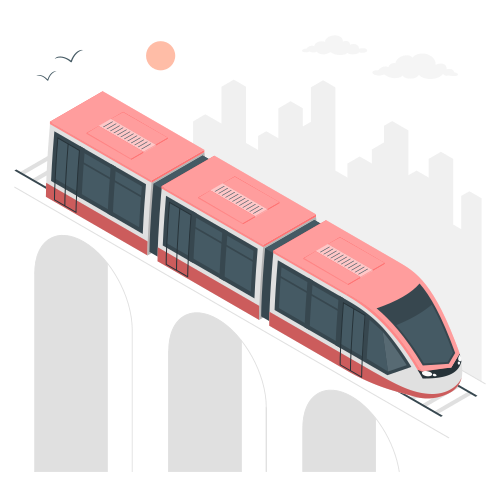
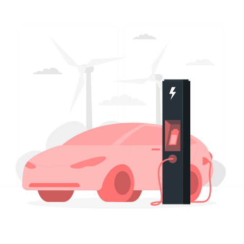
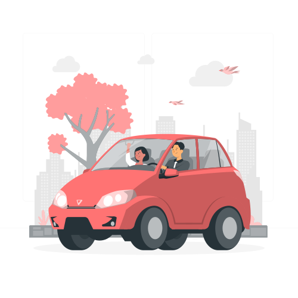
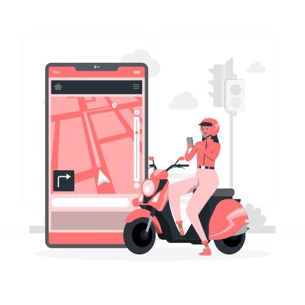
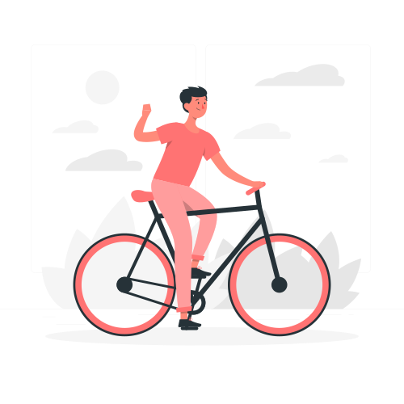
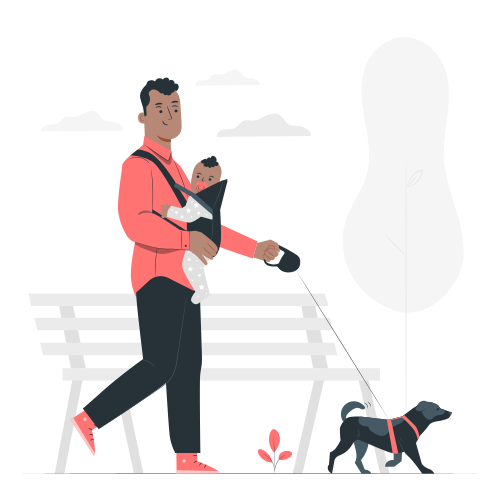

Hur mycket påverkas miljön av bilar i Umeå ?
Vi har valt att jämföra personbilars växthusgasutsläpp med det totala utsläppet i Umeå kommun. Genom att jämföra utsläppen från personbilar med kommunens totala utsläpp vill vi belysa vilken specifik roll biltrafiken spelar för stadens miljöpåverkan. Målet är att öka medvetenheten om hur stor andel av de totala växthusgasutsläppen som faktiskt kan attribueras till personbilar, och på så vis informera invånarna i Umeå om vikten av att överväga miljövänligare transportalternativ.

Totala utsläpp i Umeå (2018-2022)
Generell trend
minskat
Högsta värdet
2018
Avvikare
2021
Andel av utsläpp från transportsektorn i Umeå (2018-2022)
Generell trend
minskat
Högsta värdet
2018
Avvikare
2021
Jämförelse av bilars utsläpp och totala utsläpp i Umeå (2018-2022)
Generell trend
minskat
Högsta värdet
2018
Avvikare
2021
Finns det några alternativ jag kan använda för att minska utsläppen?

Kollektivtrafik
- Fördelar:
- 1: Smidig vid jobbig trafik.
- 2: Sparar energi.
- Nackdelar:
- 1: Bestämda tider.
- 2: Kan bli inställd.

Elbilar
- Fördelar:
- 1: Kan ladda hemma.
- 2: Tyst motor.
- Nackdelar:
- 1: Klarar bara korta sträckor.
- 2: Dyra att köpa.

Samåkning
- Fördelar:
- 1: Spendera mer tid med familj/vänner.
- 2: Skapar nya vänskaper om man är med i en samåksgrupp.
- Nackdelar:
- 1: Potentiellt farligt vid åk med främlingar.
- 2: Kan ta längre tid om det blir många stopp.

Ruttoptimering
- Fördelar:
- 1: Många kartappar är gratis och brukar visa den bästa rutten.
- 2: Bättre rutter är billigare.
- Nackdelar:
- 1: Ibland behövs omvägar.
- 2: GPS är inte alltid uppdaterade till vägförändringar.

Cykel
- Fördelar:
- 1: Inga bensinkostnader.
- 2: Fortfarande bra för relativt långa sträckor.
- Nackdelar:
- 1: Väldigt långa sträckor kan vara jobbiga.
- 2: Inte alla vägar är optimerade för cykel.

Gång
- Fördelar:
- 1: Inga kostnader alls.
- 2: Smidigt i att ta sig vart som helst.
- Nackdelar:
- 1: Väldigt långa sträckor kan vara jobbiga.
- 2: Inte alla vägar är optimerade för gång.